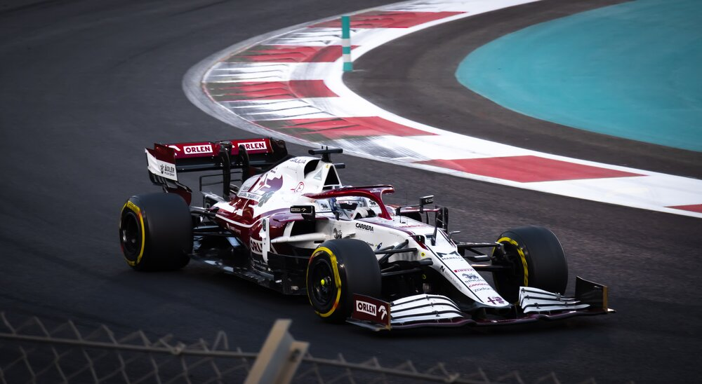
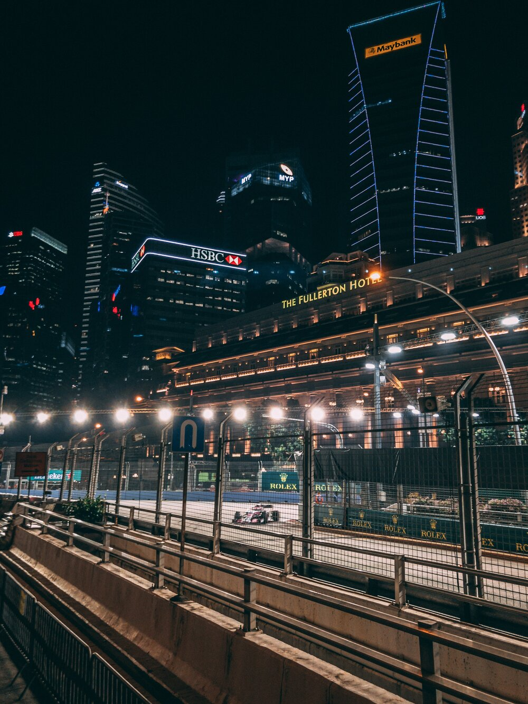

Formula One is quickly becoming one of the most popular sports worldwide. It is classified as “the highest class of international racing for single-seater formula racing cars.” However, its origins can be traces back to the European Championship of the 1930s. After WWII, motor-racing enthusiasts led to the first ever Formula Grand Prix event held in Turin during 1946. A year later the World Drivers' Championship was formalized. Following that, the first world championship Formula One race took place on May of 1950 in the Great Britain, but it wasn’t until 1981 when the competition formally became known as the FIA Formula One World Championship.
A Formula One season consists of several races held in different circuits all over the world. These races are referred to as a Grand Prix, which is a French word meaning “grand prize” in English. Throughout the races all participating teams must adhere to a set of rules, or a “formula”, established by the FIA, and the circuits in which the races are held are graded “1” by that same organization. Therefore, this competition was named Formula 1.
